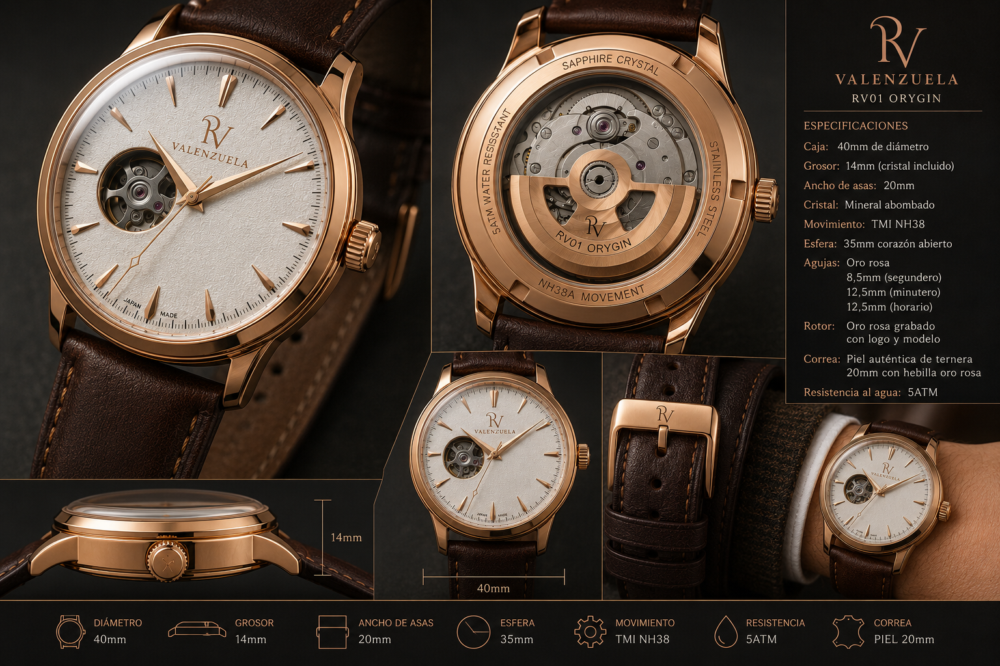

ORYGIN
El primer capítulo de VALENZUELA. Un reloj mecánico de corazón abierto, concebido alrededor de una estética clásica y detalles en oro rosa.

El origen de VALENZUELA.
RV01 ORYGIN representa el punto de partida del proyecto VALENZUELA: un reloj mecánico de diseño clásico, esfera de corazón abierto y una combinación de tonos claros, cuero oscuro y acabados en oro rosa.
Datos técnicos.
Una identidad construida en los detalles.
Corazón abierto
La apertura de la esfera permite contemplar parte del movimiento y refuerza el carácter mecánico del RV01 ORYGIN.
Oro rosa
Caja, agujas, rotor y diferentes elementos visuales comparten una misma línea estética en tonos oro rosa.
Movimiento NH38
Movimiento mecánico automático TMI NH38, elegido como base para el primer modelo de VALENZUELA.
Personalización
Logotipo, rotor, corona, hebilla y otros elementos forman parte del lenguaje propio desarrollado para VALENZUELA.